KrigingResult¶
-
class
KrigingResult(*args)¶ Kriging result.
- Available constructors:
KrigingResult(inputSample, outputSample, metaModel, residuals, relativeErrors, basis, trendCoefficients, covarianceModel, covarianceCoefficients)
KrigingResult(inputSample, outputSample, metaModel, residuals, relativeErrors, basis, trendCoefficients, covarianceModel, covarianceCoefficients, covarianceCholeskyFactor, covarianceHMatrix)
Parameters: inputSample, outputSample : 2-d sequence of float
The samples
 and 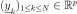.
and 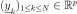.metaModel :
FunctionThe meta model:
 , defined in (3).
, defined in (3).residuals :
PointThe residual errors.
relativeErrors :
PointThe relative errors.
basis : collection of
BasisCollection of the
 functional basis:
functional basis:  for each
for each ![l \in [1, p]](../../../_images/math/0b68c051226de6f3184016584fac4ed8faf1d195.svg) with 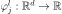.
Its size must be equal to zero if the trend is not estimated.
with 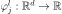.
Its size must be equal to zero if the trend is not estimated.trendCoefficients : collection of
PointThe trend coeffient vectors 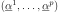.
covarianceModel :
CovarianceModelCovariance function of the Gaussian process.
covarianceCoefficients : 2-d sequence of float
The defined in (2).
covarianceCholeskyFactor :
TriangularMatrixThe Cholesky factor 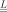 of 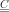.
covarianceHMatrix :
HMatrixThe hmat implementation of .
Notes
The Kriging meta model is defined by:
(1)¶
where is the condition
 for each
for each ![k \in [1, N]](../../../_images/math/0ddf54c8f205e8105659460eaa5740e879a9820f.svg) .
.Equation (1) writes:
where

and
(2)¶
At the end, the meta model writes:
(3)¶
Examples
Create the model
 and the samples:
and the samples:>>> import openturns as ot >>> f = ot.SymbolicFunction(['x'], ['x * sin(x)']) >>> sampleX = [[1.0], [2.0], [3.0], [4.0], [5.0], [6.0]] >>> sampleY = f(sampleX)
Create the algorithm:
>>> basis = ot.Basis([ot.SymbolicFunction(['x'], ['x']), ot.SymbolicFunction(['x'], ['x^2'])]) >>> covarianceModel = ot.GeneralizedExponential([2.0], 2.0) >>> algoKriging = ot.KrigingAlgorithm(sampleX, sampleY, covarianceModel, basis) >>> algoKriging.run()
Get the result:
>>> resKriging = algoKriging.getResult()
Get the meta model:
>>> metaModel = resKriging.getMetaModel()
Methods
__call__(…) <==> x(…)getBasisCollection()Accessor to the collection of basis. getClassName()Accessor to the object’s name. getConditionalCovariance(*args)Compute the expected covariance of the Gaussian process on a point (or several points). getConditionalMean(*args)Compute the expected mean of the Gaussian process on a point or a sample of points. getCovarianceCoefficients()Accessor to the covariance coefficients. getCovarianceModel()Accessor to the covariance model. getId()Accessor to the object’s id. getInputSample()Accessor to the input sample. getMetaModel()Accessor to the metamodel. getModel()Accessor to the model. getName()Accessor to the object’s name. getOutputSample()Accessor to the output sample. getRelativeErrors()Accessor to the relative errors. getResiduals()Accessor to the residuals. getShadowedId()Accessor to the object’s shadowed id. getTransformation()Accessor to the normalizing transformation. getTrendCoefficients()Accessor to the trend coefficients. getVisibility()Accessor to the object’s visibility state. hasName()Test if the object is named. hasVisibleName()Test if the object has a distinguishable name. setMetaModel(metaModel)Accessor to the metamodel. setModel(model)Accessor to the model. setName(name)Accessor to the object’s name. setRelativeErrors(relativeErrors)Accessor to the relative errors. setResiduals(residuals)Accessor to the residuals. setShadowedId(id)Accessor to the object’s shadowed id. setTransformation(transformation)Accessor to the normalizing transformation. setVisibility(visible)Accessor to the object’s visibility state. -
__init__(*args)¶ x.__init__(…) initializes x; see help(type(x)) for signature
-
getBasisCollection()¶ Accessor to the collection of basis.
Returns: basisCollection : collection of
BasisCollection of the
function basis: for each with .Notes
If the trend is not estimated, the collection is empty.
-
getClassName()¶ Accessor to the object’s name.
Returns: class_name : str
The object class name (object.__class__.__name__).
-
getConditionalCovariance(*args)¶ Compute the expected covariance of the Gaussian process on a point (or several points).
- Available usages:
getConditionalCovariance(x)
getConditionalCovariance(sampleX)
Parameters: x : sequence of float
The point
 where the conditional mean of the output has to be evaluated.
where the conditional mean of the output has to be evaluated.sampleX : 2-d sequence of float
The sample where the conditional mean of the output has to be evaluated (M can be equal to 1).
Returns: condCov :
CovarianceMatrixThe conditional covariance at point
.Or the conditional covariance matrix at the sample :
where 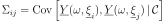.
-
getConditionalMean(*args)¶ Compute the expected mean of the Gaussian process on a point or a sample of points.
- Available usages:
getConditionalMean(x)
getConditionalMean(sampleX)
Parameters: x : sequence of float
The point
where the conditional mean of the output has to be evaluated.sampleX : 2-d sequence of float
The sample where the conditional mean of the output has to be evaluated (M can be equal to 1).
Returns: condMean :
PointThe conditional mean at point
.Or the conditional mean matrix at the sample :
-
getCovarianceCoefficients()¶ Accessor to the covariance coefficients.
Returns: covCoeff :
SampleThe defined in (2).
-
getCovarianceModel()¶ Accessor to the covariance model.
Returns: covModel :
CovarianceModelThe covariance model of the Gaussian process W with its optimized parameters.
-
getId()¶ Accessor to the object’s id.
Returns: id : int
Internal unique identifier.
-
getModel()¶ Accessor to the model.
Returns: model :
FunctionPhysical model approximated by a metamodel.
-
getName()¶ Accessor to the object’s name.
Returns: name : str
The name of the object.
-
getRelativeErrors()¶ Accessor to the relative errors.
Returns: relativeErrors :
PointThe relative errors defined as follows for each output of the model: 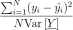 with
 the vector of the
the vector of the  model’s values
model’s values
 and 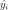 the metamodel’s values.
and 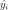 the metamodel’s values.
-
getResiduals()¶ Accessor to the residuals.
Returns: residuals :
PointThe residual values defined as follows for each output of the model: 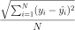 with
the model’s values and the
metamodel’s values.
-
getShadowedId()¶ Accessor to the object’s shadowed id.
Returns: id : int
Internal unique identifier.
-
getTransformation()¶ Accessor to the normalizing transformation.
Returns: transformation :
FunctionThe transformation T that normalizes the input sample.
-
getTrendCoefficients()¶ Accessor to the trend coefficients.
Returns: trendCoef : collection of
PointThe trend coefficients vectors
-
getVisibility()¶ Accessor to the object’s visibility state.
Returns: visible : bool
Visibility flag.
-
hasName()¶ Test if the object is named.
Returns: hasName : bool
True if the name is not empty.
-
hasVisibleName()¶ Test if the object has a distinguishable name.
Returns: hasVisibleName : bool
True if the name is not empty and not the default one.
-
setModel(model)¶ Accessor to the model.
Parameters: model :
FunctionPhysical model approximated by a metamodel.
-
setName(name)¶ Accessor to the object’s name.
Parameters: name : str
The name of the object.
-
setRelativeErrors(relativeErrors)¶ Accessor to the relative errors.
Parameters: relativeErrors : sequence of float
The relative errors defined as follows for each output of the model: with
the vector of the model’s values
and the metamodel’s values.
-
setResiduals(residuals)¶ Accessor to the residuals.
Parameters: residuals : sequence of float
The residual values defined as follows for each output of the model: with
the model’s values and the
metamodel’s values.
-
setShadowedId(id)¶ Accessor to the object’s shadowed id.
Parameters: id : int
Internal unique identifier.
-
setTransformation(transformation)¶ Accessor to the normalizing transformation.
Parameters: transformation :
FunctionThe transformation T that normalizes the input sample.
-
setVisibility(visible)¶ Accessor to the object’s visibility state.
Parameters: visible : bool
Visibility flag.